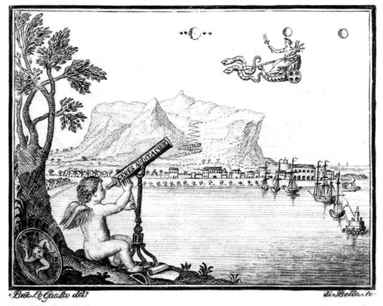

고등학교 행성우주과학 · 데이터 분석 2차시
소행성의 발견과
광도곡선 분석
화성과 목성 사이의 빈자리를 찾던 천문학자들이 행성도 혜성도 아닌 작은 천체를 만나 ‘소행성’이라는 이름을 붙이기까지를 따라갑니다. 이어 소행성 에로스의 실제 관측 기록으로 자전주기를 구하고, 모형을 맞춰 모양을 추론한 뒤 탐사선의 사진과 비교합니다.
자료: DAMIT에 공개된 실제 측광 6밤 619점 · 설치와 로그인 없이 브라우저에서 실행

1차시 · 50분
소행성의 발견과 이름
1781년 허셜부터 1901년 에로스의 밝기 변화까지, 실제 인물 사진과 탐사선 사진으로 따라가는 수업자료와 하룻밤 관측 기록 탐구
2차시 · 50분
소행성의 자전주기와 모양
다섯 밤의 실제 관측을 위상으로 접어 자전주기를 구하고, AI의 답을 검토하고, 모형으로 모양을 추론해 탐사선 측정과 비교
교사용 지도안 · 자료 처리 · 출처 · 기획과 개발 기록 · 수업자료는 ← → 키로 넘김